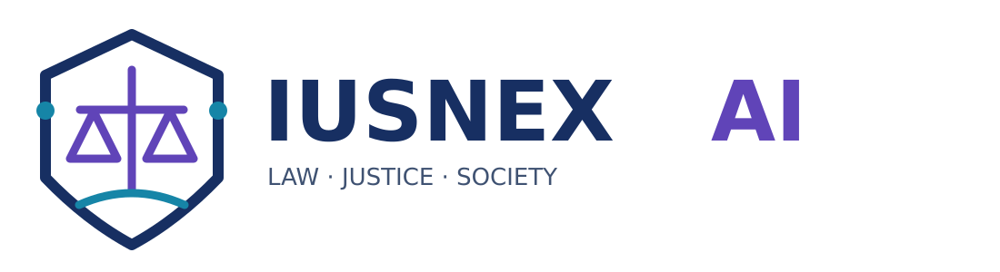

NLP jurídico
Comprensión, clasificación y extracción de información en documentos legales.

GitHub ↗IUSNEX AI conecta investigación en inteligencia artificial, derecho y ciencias sociales para explorar tecnologías responsables que fortalezcan el acceso a la justicia y los procesos restaurativos.
IUSNEX AI es una iniciativa académica interdisciplinaria entre ingeniería, derecho y ciencias sociales. Su nombre une ius, derecho, con nexus, vínculo o conexión.
Nuestra misión: investigar, diseñar, evaluar y transferir soluciones de inteligencia artificial para problemas jurídicos y de acceso a la justicia, con rigor científico, enfoque de derechos humanos y supervisión humana.
Nuestra visión: consolidar una comunidad de investigación aplicada con resultados verificables, alianzas responsables y contribuciones al debate público.
Según la información reunida en la conversación de trabajo, este proyecto se vincula al Ecosistema de Inteligencia Artificial Urbana de Bogotá, iniciativa liderada por la Universidad Distrital Francisco José de Caldas, con participación de la Pontificia Universidad Javeriana y otras instituciones aliadas.
La iniciativa propone explorar cómo las herramientas tecnológicas pueden contribuir a ampliar el acceso a la justicia y apoyar enfoques restaurativos. Los objetivos técnicos, entregables, financiación específica y cronograma deberán precisarse con la documentación oficial del proyecto.
Conocer el ecosistema de ATENEA ↗Comprensión, clasificación y extracción de información en documentos legales.
Sistemas de consulta fundamentados en fuentes jurídicas trazables.
Explicabilidad, sesgos, transparencia, privacidad y derechos humanos.
Búsqueda semántica y acceso a información normativa y judicial.
Herramientas de asistencia con supervisión humana y sin sustituir al juez.
Innovación para acercar servicios de justicia y apoyar procesos restaurativos.
Estas son líneas de investigación propuestas para IUSNEX AI; no constituyen compromisos o resultados oficiales del proyecto financiado.
Liderazgo del proyecto · Pontificia Universidad Javeriana
Equipo investigador
Equipo investigador · Inteligencia artificial y NLP
Fernanda Fonseca Rosenblatt — International Institute for Restorative Practices · Hannes Westermann — Maastricht University.
Equipo y roles recogidos en la conversación de preparación del proyecto; pendientes de contrastar con la ficha institucional aprobada.
El Ecosistema de Inteligencia Artificial Urbana es liderado por la Universidad Distrital Francisco José de Caldas y cuenta con la Pontificia Universidad Javeriana y la Universidad Central como instituciones cooperantes, además de otros aliados. IUSNEX AI se presenta aquí como identidad académica propuesta para articular y comunicar esta agenda de investigación en justicia.
Cuatro pilotos planteados como punto de partida para la discusión académica y la selección de casos de uso.
Búsqueda léxica y semántica sobre un corpus público. Evaluación con precisión@k, recall@k, nDCG y revisión de expertos.
Respuestas sustentadas en fragmentos verificables. Evaluación de fidelidad, cobertura, abstención y errores.
Detección de datos personales y entidades con métricas de precisión, recall y F1, acompañada de revisión humana.
Matrices de riesgo, análisis de sesgos, pruebas adversariales y documentación de las limitaciones de cada sistema.
Portafolio conceptual: estos pilotos no se presentan como desarrollos terminados ni como productos contractuales de ATENEA.
Identificar usuarios, necesidades jurídicas, restricciones y preguntas de investigación.
Documentar fuentes, licencias, permisos y sensibilidad; aplicar minimización y controles de acceso.
Definir líneas base y criterios de éxito; desarrollar pipelines reproducibles y documentados.
Combinar métricas, revisión jurídica y evaluación con usuarios; publicar únicamente resultados autorizados.
Alcance, gobernanza, caso prioritario, fuentes e indicadores.
Corpus, protocolos de datos, arquitectura y líneas base.
Uno o dos pilotos, pruebas técnicas y revisión jurídica continua.
Evaluación con expertos y usuarios; seguridad, sesgos y accesibilidad.
Resultados, demostración, sostenibilidad y evaluación de formalización.
Secuencia propuesta, sin fecha de inicio comprometida. No corresponde al cronograma contractual del proyecto de justicia.
La propuesta contempla artículos, informes técnicos, conjuntos de evaluación documentados, prototipos y materiales formativos. Este sitio aún no registra publicaciones ni resultados finalizados del proyecto.
Una iniciativa para conectar investigadores, estudiantes y profesionales del derecho y la ingeniería. Para consultas sobre la iniciativa, puedes contactar a Lorena Vega Dueñas a través de su perfil público.
Perfil de Lorena Vega Dueñas ↗Distinguimos información anunciada públicamente de líneas y objetivos que aún están en formulación.
Sitio académico en desarrollo. No representa un portal oficial de ATENEA ni implica aprobación de identidad institucional. Para publicar montos, fechas, obligaciones o resultados del proyecto se requiere soporte documental.